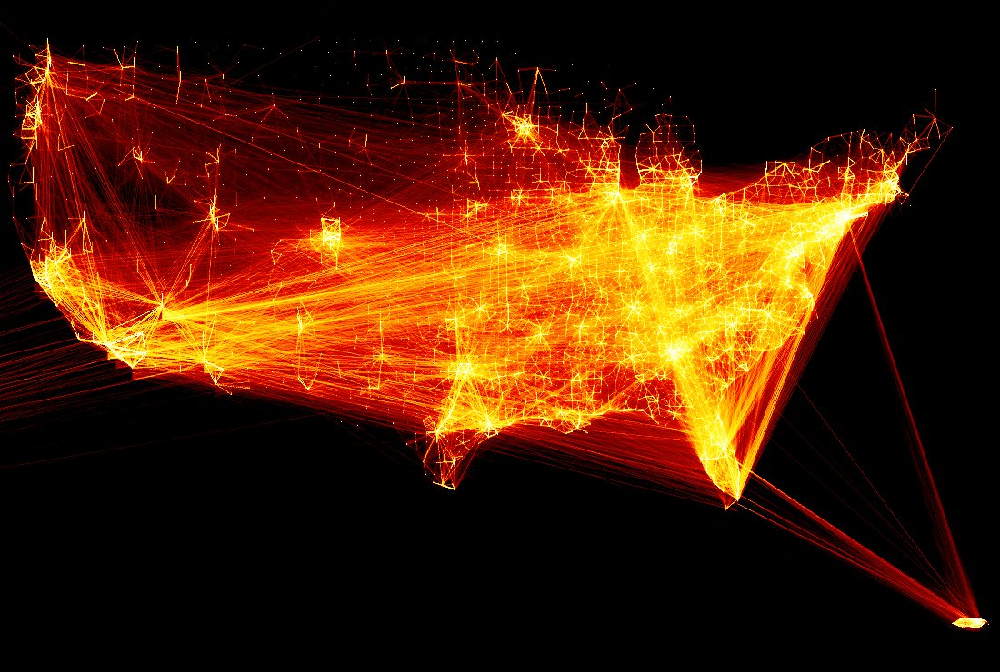

Teaching spatial data science and geospatial AI so that students can use these tools well, and can tell when the data, the maps or the AI are getting a place wrong.

One week of county-to-county movement in the US, January 2020 (Lab 7). Data: GeoDS COVID-19 US Flows.
This project, supported by the Mozilla Foundation, brings responsible-computing questions into the everyday work of a spatial data science course at The University of Texas at Austin. Instead of a separate ethics unit, the questions sit inside the labs, next to the code that raises them.
Our approach: one question per lab
Who is missing from web data?Lab 3. Students scrape rental listings, then ask whether the table represents the housing that actually exists in their ZIP code, and who would be misled by it.
What does a mobility dataset measure, and what does it not?Lab 7. Millions of phone-derived trips become a national flow map; the same numbers say nothing about who travelled or why.
Who is left out of access to care?Lab 8. Access to obstetric beds across Texas depends on a travel-time threshold someone chose. Students change it and watch which counties appear under-served.
Is the camera measuring the street, or itself?Lab 9. A greenery index from street-view images can swing by tens of points at one corner depending on which way the camera faced.
A fluent answer is not a correct one.Lab 10. Students check what generative AI says about all 254 Texas counties against official data, and test whether it knows small, rural places as well as large ones.
GRG 356T Spatial Data Science and Maps: ten hands-on labs in Python, from web data and spatial regression to remote sensing, networks and generative AI.